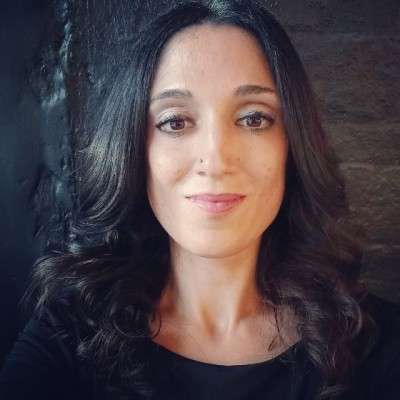
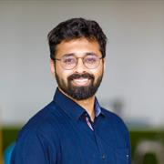
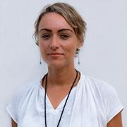
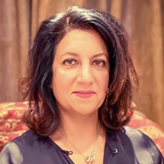

About the workshop
Trauma-informed care is gaining momentum across sectors that work with potentially vulnerable groups, including education, healthcare, social work, and criminal justice. In parallel, trauma-informed research and design have emerged as a growing area of interest in computing, with a marked increase in publications since 2020 addressing technology-mediated psychological trauma, technologies that support trauma survivors, and design with and for those communities.
This trend is visible across SIGACCESS, SIGCHI, and the wider ACM computing research landscape. Given the strong, bidirectional association between disability and psychological trauma, the need for shared trauma-informed practices is especially acute in accessibility research. This workshop brings together researchers, practitioners, and community members to examine what trauma-informed research looks like in our field, and to begin building shared resources and best practices.
A note on care. Discussions may touch on personal and professional experiences of trauma. The workshop is designed around grounding exercises, a collaboratively agreed code of conduct, quiet-room access, and on-site mental health first aid. Full details are in the participation and accessibility section.
Goals
The workshop aims to:
- Surface and synthesise existing practices and challenges around trauma-informed research in accessibility and HCI.
- Develop a shared vocabulary and set of principles for trauma-informed research in computing contexts.
- Identify concrete next steps for the community, including research agendas, design guidelines, and community resources.
Following the workshop, the organising team will synthesise the outputs into a structured document of draft principles and heuristics, shared with all participants for review within four weeks. We also intend to pursue a submission to ACM Transactions on Accessible Computing (TACCESS), co-authored with interested participants.
Who should attend
We invite researchers, practitioners, designers, and community members working at the intersections of accessibility, computing, physical and mental health, disability and social justice, and related fields. We especially welcome those with:
- Personal or professional experience of conducting research with trauma-affected communities, including people with disabilities and survivors of domestic and intimate partner violence, gender-based and sexual violence, medical trauma, and psychological trauma.
- Insight into methodological challenges and lessons learned.
- Experience of ethical dilemmas encountered in research design, data collection, or dissemination.
- Design approaches that centre trauma-informed principles.
- Lived experience of being a research participant or community member in such studies.
We particularly encourage early-career researchers, practitioners, and community members to apply alongside established academics, and we actively seek participation from the Global South and from groups historically underrepresented in computing.
Call for participation
All submissions must comply with the SIGACCESS accessibility guidelines. We will work with authors to ensure submissions are fully accessible before they are shared with participants. At least one author of each accepted submission must attend the workshop in person and be registered for the ASSETS 2026 conference.
What you can submit
Contributions may reflect on any of the themes listed under who should attend. Choose whichever format best suits what you want to bring.
Position paper
2–4 pages · ACM format
Describe your research, practice, or perspective related to trauma-informed research in accessibility or HCI.
Multimodal short story
Up to 4 pages
Illustrate, through narrative, image, or other format, a lived experience of trauma as it relates to research participation or conduct. Include a brief reflexive statement.
Visual or creative submission
Poster / diagram + 1-page description
A poster, diagram, or illustrated narrative accompanied by a one-page description explaining the work and its relevance to the workshop themes.
How submissions are handled
Places are limited; we will confirm the final number of participants on this page. Submissions are reviewed by the organising committee for relevance and fit rather than through anonymous peer review, so please include author names and affiliations.
Your control over what is shared
We recognise that some submissions will draw on personal experience of trauma. You decide how far your submission travels, and you can change your mind:
- Circulated to participants only — the default. Accepted submissions are shared with the workshop group ahead of the day, and not published.
- Published on this website — only if you opt in on the submission form.
- Withdrawn — you may withdraw your submission, or ask us to remove it from the website, at any point and without giving a reason. Email the lead organiser and we will act on it.
Submissions are held on UCL systems, accessible only to the organising team, and are deleted twelve months after the workshop unless you have opted into publication.
How to submit
Submit through the online submission form. If the form does not work for you for any reason, email your submission to m.bandukda@ucl.ac.uk with “ASSETS 2026 workshop submission” in the subject line — this route is equally valid and we will confirm receipt within two working days. If you have access requirements for the submission process itself, please contact us and we will accommodate them.
Important dates
| Milestone | Date |
|---|---|
| Submission deadline | 20 August 2026 |
| Notification of acceptance | 24 August 2026 |
| ASSETS 2026 early-bird registration closes | 27 August 2026 — register on the main site |
| Workshop day | 25 October 2026 Provisional |
| ASSETS 2026 conference | 25–28 October 2026, Porto (Vila Nova de Gaia), Portugal |
Registration matters. To attend a workshop, you must be registered for the ASSETS 2026 conference. We notify authors on 24 August, three days before early-bird registration closes on 27 August, so accepted authors can register at the lower rate. Please confirm current rates and deadlines on the ASSETS 2026 site, as they take precedence over this page.
Planned activities and schedule
A half-day workshop structured around a divergent and convergent thinking framework.
| Duration | Activity |
|---|---|
| 10 min | Opening and organiser introductions. Welcome, grounding exercise, and collaborative code of conduct. |
| 30 min | Keynote talk and Q&A. An invited speaker with direct experience in trauma-informed approaches, disability justice, or ethical research with marginalised communities. |
| 50 min | Participant lightning talks. Short presentations from accepted submissions. |
| 10 min | Comfort break |
| 50 min | Activity 1 — Diverging. Small-group work surfacing existing experiences, challenges, and practices, guided by role personas. |
| 10 min | Comfort break |
| 50 min | Activity 2 — Converging. Cross-group work developing concrete, actionable principles, closing with a gallery walk and dot-voting. |
| 20 min | Closing reflections. Open space to share reflections and ask remaining questions. |
| 10 min | Optional group photo and workshop highlights video (with consent) |
Participation and accessibility
Format and participation
We have chosen to run this workshop in person only. The activities depend on small-group work, shared physical artefacts, and the ability to read the room and respond to distress as it arises — none of which we can facilitate safely across a hybrid split. The ASSETS 2026 conference itself offers a virtual attendance option; that option does not extend to this workshop.
To make the work available beyond the room, all findings will be published openly and disseminated to community mailing lists, and a reflective highlights video will be shared on this website with participants' consent. If in-person attendance is a barrier for you and you would still like to contribute, please get in touch — we would rather find a way than lose the contribution.
Access requirements
Participants will be asked to share access requirements upon acceptance by completing a short pre-workshop survey. We will work with the ASSETS conference accessibility team to ensure access to a quiet desensitisation space, an accessible workshop format, and a wheelchair accessible workshop space. If there is anything that would help you take part fully, please let us know as soon as possible.
Well-being and safeguarding
The workshop is designed to reduce the risk of re-traumatisation and emotional dysregulation by including structured grounding exercises led by the workshop facilitators; a collaboratively developed code of conduct; and access throughout the conference to the quiet rooms and to an Emergency and Mental Health First Aider for private support.
Organisers
The organising team brings more than 50 years of combined experience working with disability, marginalised, and minority communities across accessible computing, healthcare, disability and social justice, education, and mental health. All are based at University College London (UCL), United Kingdom.
Maryam Bandukda
Senior Research Fellow, Global Disability Innovation Hub, UCL

Xandra Miguel-Lorenzo
Anthropologist (PhD, LSE), UCL

Tigmanshu Bhatnagar
Lecturer & Research Fellow, Global Disability Innovation Hub, UCL

Victoria Austin
Pro Vice-Provost (Inequalities), UCL
Professor of Social Justice and Innovation, UCL
Catherine Holloway
Professor of Interaction Design, UCL Interaction Centre
Co-founder & Director, Global Disability Innovation Hub, UCL

Monica Lakhanpaul
Professor of Integrated Community Child Health, UCL Great Ormond Street Institute of Child Health